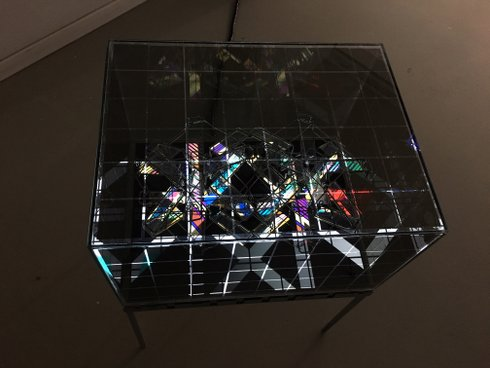

Ivan Paskalev
Ivan Paskalev geb. 1980 in Sofia, Bulgarien. Studium der Kunstpädagogik und Kunstgeschichte, LMU München. Freischaffender Künstler bei PLATFORM München. Paskalev gewann mit „17:43“ den VIDEODOX Förderpreis 2017.
ivanpaskalev.com.
Werke Not Important 2011 | CAD 2013 | Win-Win-Dowse 2014 | Papierarbeiten o.T. 2016 | 200≠200 2016 | Frühling 2016 | o.T. I, II 2017 | 12:55 2017 | 17:43 2017 | Futuro chaos 2017 | Prototype 2019 | orac 2019
orac
2019 | Videoskulptur
Konzept, Bau, Video: Ivan Paskalev
Eine befremdliche Gestalt, bestehend aus einem LCD-Monitor, auf
vier Metallfüßen liegend. Auf dem Monitor sitzt eine
halbtransparente Haube, die die direkte Sicht auf das Video mittels
polarisierter Folien verdeckt. Nur kleine Spalten gewähren Einblicke
ins Verborgene. Im Inneren der Box schimmert eine drahtige Struktur
durch. Auf dieser erkennt man irisierende Flächen, auf der
Videofragmente sichtbar werden.
Was ist das? Das ist orac. orac stellt sich vor.
Wir verstehen ihn noch nicht… Er uns aber auch nicht wirklich.
(Ivan Paskalev)